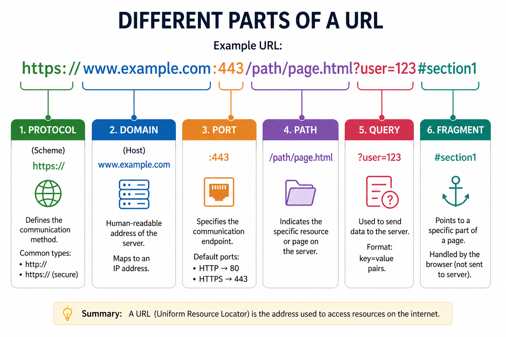

Difference between a Web Application and a Website

A website is a collection of static or dynamic web pages that provide information to users, while a web application is an interactive platform that allows users to perform specific tasks or functions online.
Parts of a URL

Understanding the parts of a URL is essential for navigating the web effectively. Here are the main components:
User Input: The process begins when a user enters a Uniform Resource Locator (URL) into the browser’s address bar or clicks a link. DNS Resolution: The browser initiates a Domain Name System (DNS) lookup to translate the human-readable domain name (e.g., example.com) into a machine-readable IP address. HTTP Request: Once the IP address is identified, the browser establishes a connection and sends an HTTP request to the server, detailing the specific resource or action required. Server-Side Processing: The web server receives the request and processes it, which may involve authenticating the user, executing application logic, or fetching data from a database. HTTP Response: After processing, the server generates and sends an HTTP response back to the browser, typically containing a status code (like 200 OK) and the requested resource. Client-Side Rendering: Finally, the browser parses the response data—such as HTML, CSS, and JavaScript—and renders the visual content for the user to interact with.HTTP Response cycle

User Input: The process begins when a user enters a Uniform Resource Locator (URL) into the browser’s address bar or clicks a link. DNS Resolution: The browser initiates a Domain Name System (DNS) lookup to translate the human-readable domain name (e.g., example.com) into a machine-readable IP address. HTTP Request: Once the IP address is identified, the browser establishes a connection and sends an HTTP request to the server, detailing the specific resource or action required. Server-Side Processing: The web server receives the request and processes it, which may involve authenticating the user, executing application logic, or fetching data from a database. HTTP Response: After processing, the server generates and sends an HTTP response back to the browser, typically containing a status code (like 200 OK) and the requested resource. Client-Side Rendering: Finally, the browser parses the response data—such as HTML, CSS, and JavaScript—and renders the visual content for the user to interact with.